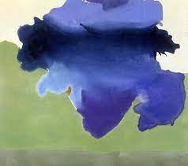

149. The Bay. Helen Frankenthaler. 1963 CE Acrylic on canvas.
- Form
- Painted directly on an unprimed canvas; canvas absorbs the paint more directly
- Use of runny water-based acrylic paint
- Soak-stain technique
- Use of landscape as a starting point, a basis for imagery in the works
- The two-dimensionality of the canvas is accentuated
- Context and Interpretation
- Artist worked in the avant-garde New York School at mid-century